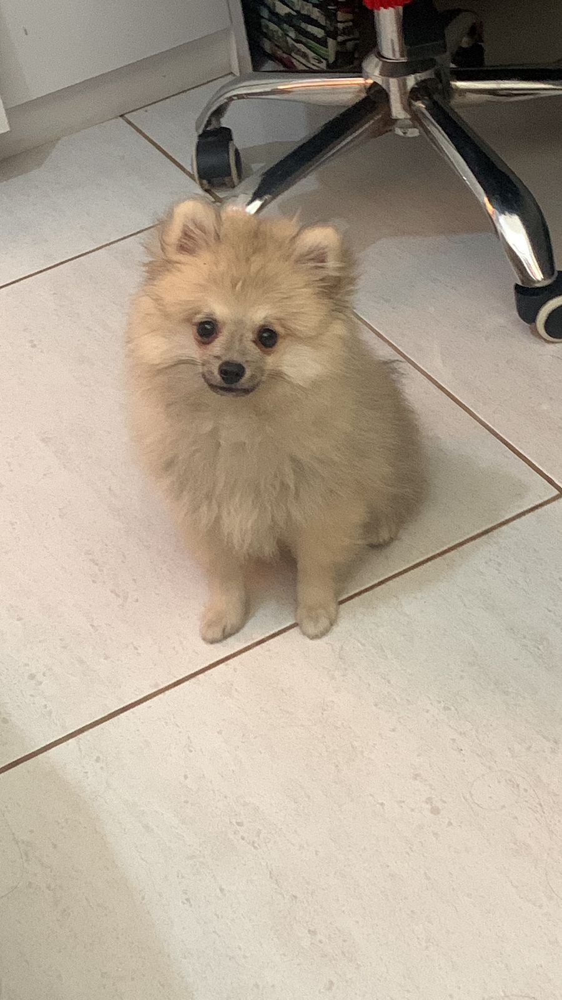
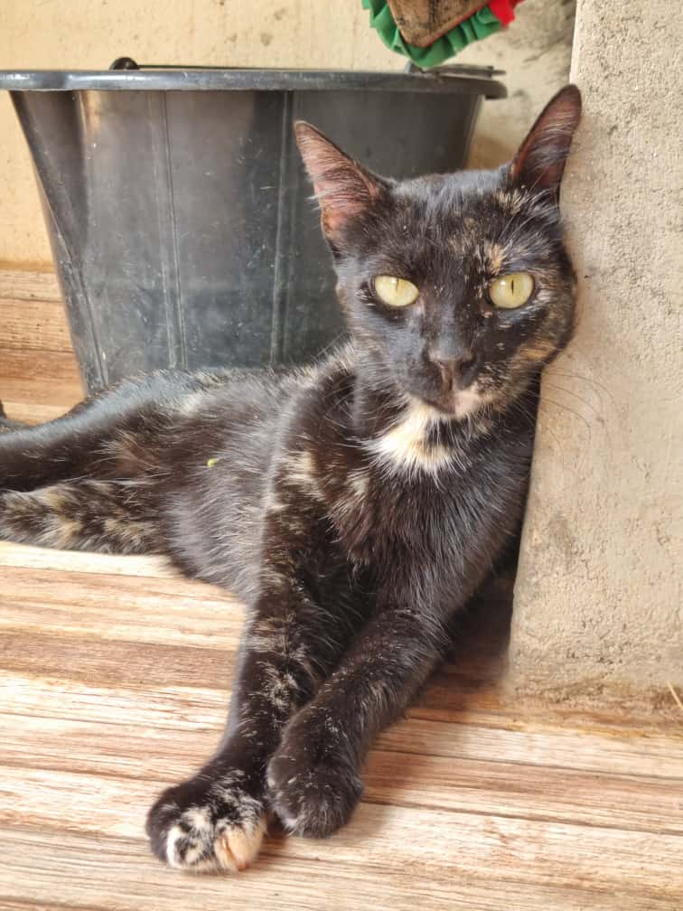
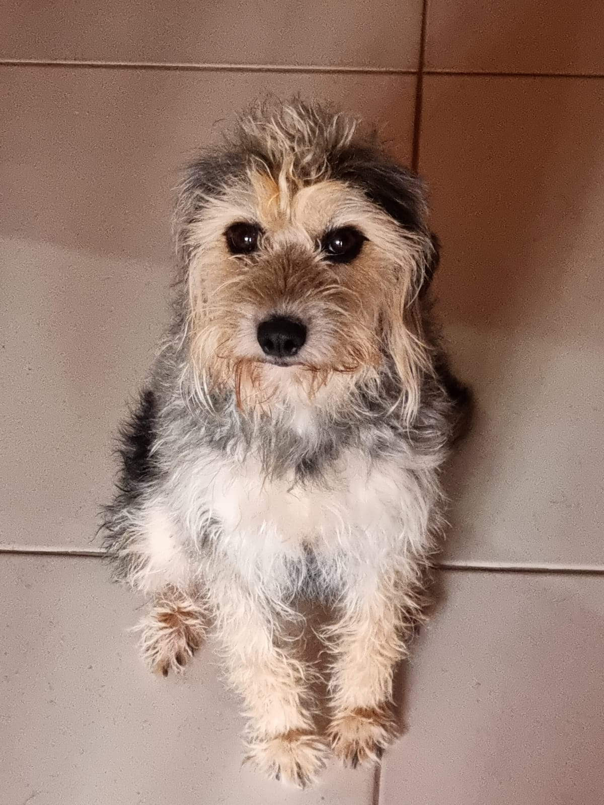
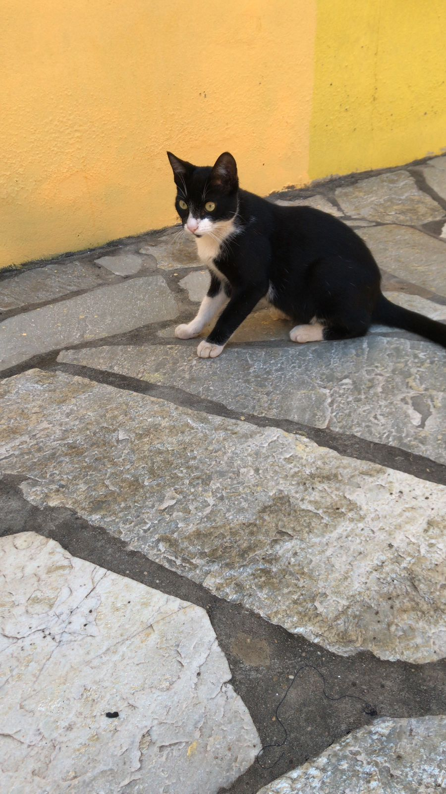

Animais que já foram adotados
Confira abaixo alguns dos animais que encontraram um lar amoroso através da ONG CÃOridade:
- Cachorro: Gael - Adotado em Janeiro de 2023 
- Gata: Astrix - Adotada em Março de 2025 
- Cadela: Olívia - Adotado em Maio de 2023 
- Gato: Bento - Adotada em Julho de 2024 